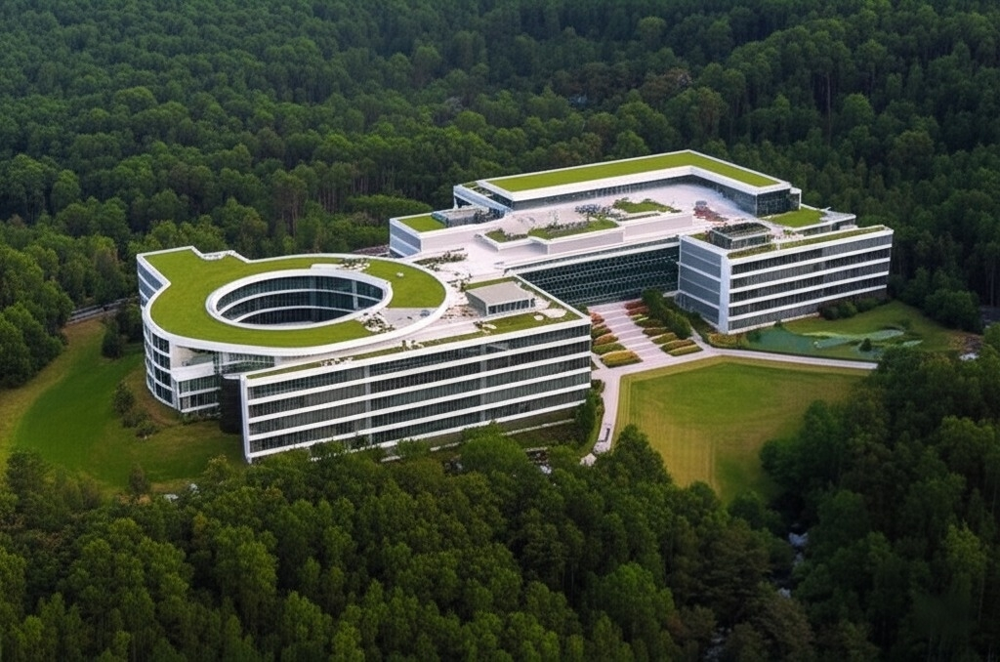
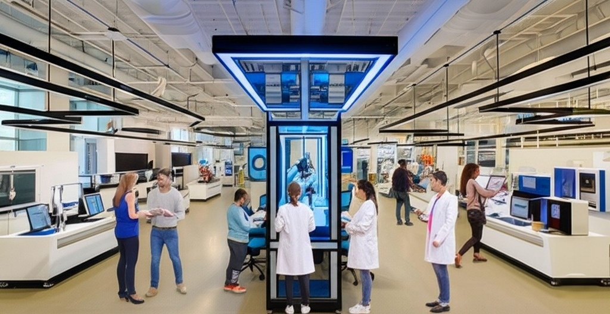

Inspirados en la increíble metamorfosis de la rana —desde su humilde comienzo hasta convertirse en un ser ágil y adaptable—, nuestra filosofía se centra en la transformación, la innovación y el crecimiento constante.
Bienvenido a la Universidad FrogDemy
Un lugar donde la curiosidad encuentra su camino y el potencial se transforma en excelencia. Más que una institución de educación superior, FrogDemy es un ecosistema de aprendizaje dinámico, diseñado para impulsar a nuestros estudiantes a dar el gran salto hacia sus metas profesionales y personales.

Nuestra Historia: De un Estanque de Ideas a un Océano de Conocimiento

La historia de FrogDemy comenzó en 2023, no en un gran auditorio, sino a orillas de un tranquilo santuario natural conocido como el Valle de las Ranas Doradas. Nuestro fundador, el Dr. Oswuar Blanco, un biólogo visionario y educador apasionado, observó cómo este pequeño anfibio, la rana dorada (una especie endémica, Atelopus vancensis), prosperaba gracias a su increíble capacidad de adaptación a un entorno en constante cambio.
Vio en ello la metáfora perfecta para la educación del futuro: una formación que no solo impartiera conocimiento, sino que enseñara a los estudiantes a adaptarse, evolucionar y saltar sobre los obstáculos.
Con un pequeño grupo de 12 profesores y 50 estudiantes, la "Academia Frog" (como se llamó originalmente) abrió sus puertas en un modesto campus integrado respetuosamente en el paisaje. Su enfoque era radical para la época: un currículo interdisciplinario que rompía las barreras entre las ciencias y las humanidades.
A lo largo de las décadas, FrogDemy creció. En el 2024 se construyó el icónico "Pabellón del Salto", nuestro centro de innovación y emprendimiento. En el 2025, expandimos nuestras facultades para incluir artes digitales y ciencias ambientales, convirtiéndonos en pioneros en sostenibilidad. Hoy, FrogDemy es una universidad de renombre mundial, pero nunca hemos olvidado nuestros orígenes. El espíritu de la rana dorada —resiliente, audaz y siempre mirando hacia adelante— sigue siendo el corazón de todo lo que hacemos.
Ubicación y Campus: Un Ecosistema para Crecer
Nuestra universidad está enclavada en el impresionante y protegido Valle de las Ranas Doradas. Este entorno único no es solo un telón de fondo, sino una parte integral de la experiencia FrogDemy. El campus combina una arquitectura de vanguardia con un profundo respeto por la naturaleza.
Integración Natural: Los edificios modernos con techos verdes y sistemas de recolección de agua de lluvia se mezclan con senderos boscosos, arroyos y estanques naturales que sirven como laboratorios vivos para nuestros estudiantes de ciencias.
El Estanque del Saber: Nuestra biblioteca central, de forma circular y rodeada por un estanque sereno, es un espacio diseñado para la concentración y la reflexión profunda.


El Centro de Innovación "El Salto": Un edificio de última generación equipado con laboratorios de fabricación (Fab Labs), espacios de coworking y tecnología de punta para que los estudiantes conviertan sus ideas en proyectos reales.
Vida Sostenible: Nuestro campus funciona en un 80% con energías renovables y promovemos activamente una cultura de cero residuos, reflejando nuestro compromiso con el planeta.
Estar en FrogDemy es estudiar en un lugar que te inspira a respirar, pensar con claridad y conectar con el mundo que te rodea.
Nuestros Valores: El ADN de FrogDemy
Nuestra identidad se construye sobre cinco pilares fundamentales, inspirados en el ciclo de vida y las características de nuestra mascota simbólica.
Transformación (Metamorfosis)
Creemos que la educación es la más poderosa de las metamorfosis. Acompañamos a cada estudiante en su viaje personal, desde el descubrimiento de sus pasiones hasta convertirse en un profesional seguro y competente, listo para impactar al mundo.
Adaptabilidad (Agilidad en Tierra y Agua)
El mundo no se detiene, y nosotros tampoco. Nuestro currículo flexible y enfocado en resolver problemas del mundo real enseña a nuestros estudiantes a ser pensadores ágiles, capaces de prosperar en cualquier entorno y de reinventarse cuando sea necesario.
Innovación (El Gran Salto)
Fomentamos una cultura de audacia y creatividad. Animamos a nuestros estudiantes y profesores a tomar riesgos calculados, a desafiar el status quo y a "dar el gran salto" hacia ideas revolucionarias. El fracaso no es un final, sino un paso crucial en el aprendizaje.
Comunidad (El Ecosistema)
Al igual que en un ecosistema saludable, cada miembro de FrogDemy es vital. Promovemos la colaboración, la empatía y la responsabilidad social. Entendemos que el éxito individual está intrínsecamente ligado al bienestar de la comunidad y del planeta.
Curiosidad (Siempre Explorando)
La curiosidad es el motor del conocimiento. Cultivamos un ambiente donde hacer preguntas es tan importante como encontrar respuestas. Queremos que nuestros egresados mantengan un hambre insaciable por aprender durante toda su vida.
Da el salto hacia tu futuro.
Si buscas más que un título; si buscas una transformación. Si sueñas con un lugar donde tus ideas puedan crecer, adaptarse y saltar más allá de los límites. Si estás listo para descubrir tu potencial, has encontrado tu hogar.
Bienvenido a FrogDemy.